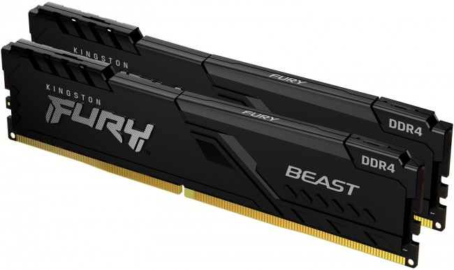

Pamięć RAM – szybki dostęp do danych
RAM (ang. Random Access Memory) to pamięć operacyjna komputera, która służy do tymczasowego przechowywania danych potrzebnych w danej chwili. W przeciwieństwie do dysku twardego, RAM jest bardzo szybka, ale dane z niej znikają po wyłączeniu komputera. Im więcej pamięci RAM, tym więcej programów może działać jednocześnie bez spowolnień – dlatego jest kluczowa dla wydajności systemu, gier czy aplikacji graficznych. Współczesne komputery najczęściej korzystają z pamięci typu DDR4 lub DDR5, które różnią się szybkością i efektywnością energetyczną. RAM montuje się bezpośrednio na płycie głównej w specjalnych slotach, a jej ilość i prędkość mają realny wpływ na komfort pracy z komputerem. W skrócie – RAM to krótkotrwała pamięć robocza komputera, która pozwala działać wszystkim uruchomionym procesom.
